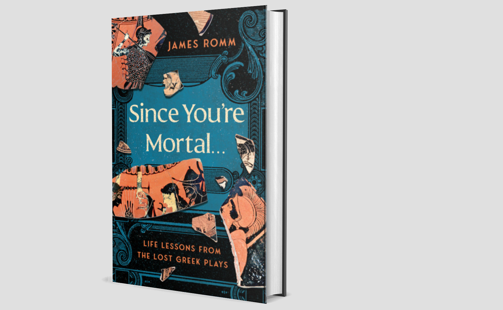
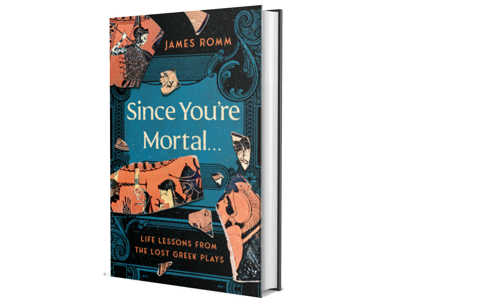

The Most Delightful Book of Wisdom
James Romm: Since You Are Mortal... (Review)

James Romm (2026). Since You’re Mortal…: Life Lessons from the Lost Greek Plays. W.W. Norton and Company. 176 pages.
Get it here: Amazon US, publisher’s website. Amazon UK doesn’t seem to have the book yet.
If you like reading about philosophy, here's a free, weekly newsletter with articles just like this one: Send it to me!
I was delighted to open James Romm’s little collection of ancient wisdom and immediately be enchanted by the premise of the book, the idea behind it, the selection of sources and sayings, and also the handsome production values that make this book much more than just another scholarly source. And now I’m very happy to show it to you.
The author
James Romm is the James H. Ottaway Jr. Professor of Classics at Bard College in Annandale-on-Hudson, New York. He specialises in ancient Greek and Roman culture and civilisation and is the author of multiple books. His Amazon profile offers Plato and the Tyrant, Ghost on the Throne (about Alexander the Great), Dying Every Day (about Seneca), How to Live, and How to Die. How to Live will set you back 18.90 USD. How to Die one can learn from the audiobook for only 10. Makes sense, since the process of dying seems to be much shorter and inevitably successful, even if one does it badly. Life is definitely worth investing more in to get it right.
Professor Romm is incredibly prolific — Amazon lists 29 titles, and I quickly decided that I needed every single one of them. Some people just have the talent to choose topics that are irresistible — Lionel Casson comes to mind, whose books I have in multiple copies, one for the holidays, one for home, one for work. Casson is the author of such irresistible reader magnets as Life in Ancient Rome, Life in Ancient Egypt, Travel in the Ancient World, The Ancient Mariners, Libraries in the Ancient World, and many others. It’s a mystery to me how anyone can look at these titles and not immediately reach for their credit card; and the same is true of most of Romm’s books. An anthology of sixteen Greek plays in new translations? The Greek Histories: The Sweeping History of Ancient Greece as Told by Its First Chroniclers: Herodotus, Thucydides, Xenophon, and Plutarch? Lives That Made Greek History? The Edges of the Earth in Ancient Thought? — I won’t tell you what my Amazon bill for tonight’s research into the works of Prof Romm is, but it’s not pretty.
The book
Since You’re Mortal… Life Lessons from the Lost Greek Plays is, like many of Romm’s books, not his original work. It is a selection of parts of a bigger work, the Anthology of Stobaeus. Johannes Stobaeus was a man who lived in Macedonia in the 5th century AD. We know nothing more of his life, except that he had a son, Septimius, for whom he made a collection of sayings and famous quotes from ancient Greek authors. This collection, a present to that son, presumably meant to accompany the young man through life, contained quotes from more than five hundred authors, dealing with physics, dialectic, and ethics; and, in the second part, with moral and political wisdom and practical advice for everyday life. For us it is particularly important because many of the works that Stobaeus cites are today lost, and his quotes are often the only words we have from these lost books.
The publication history of the work is messy (Wikipedia gives an idea of its complexity) — much of it was itself lost, and the remaining parts have been rearranged and renamed multiple times, so that, as I understand it, it is difficult to say today what the original work looked like. The whole book has never been translated into any modern language — partly because many of the quotes in it are already known as parts of works that we still have today, and duplicating them would not provide much benefit to the reader. But still it is amazing that the most modern edition of the text is over a hundred years old (Curt Wachsmuth and Otto Hense, Berlin, 1884–1912, 5 volumes), and that, apparently, nobody felt the need to engage with it since. In the preface to the book we are discussing today, Prof Romm mentions that he is working, together with others, on an English translation of the whole book for Oxford University Press; but, knowing academic publishers, this will likely be only financially accessible to university libraries, not normal people.
Surprisingly, after being told by both Wikipedia and Prof Romm that no modern translation exists, I found one right here, on the pages of a cryptocurrency lawyer, of all people. It seems to be an 1823 translation by one Thomas Gaisford, “Royal Professor of the Greek language”. Not having access to the original, I cannot tell how much of it is included in this translation, but it’s around 110,000 words, so quite a sizeable chunk of text.
Contents
All this should already make the heart of any bibliophile beat faster: a book about lost books, a collection of ancient wisdom, itself never translated, available only in centuries-old compilations, but also in an apocryphal English-language version, a single copy of which lives buried deep in the blog of a cryptocurrency lawyer. This could almost be an Umberto Eco plot. If you are not intrigued by that, I don’t know how to help you.
Now, I won’t talk more about the original book of Stobaeus, which, as I said, I have no reliable access to and no means of evaluating. Let’s therefore look at the only version that we do have available, which is the “doubly distilled” (his words) edition Prof Romm has put together. The assumption of the introduction being that doubly distilling the ancient wisdom will make it even more potent.
The structure of Romm’s edition is said to follow the original plan of Stobaeus’ book: It begins with the human condition, food, drink and pleasure, ethics and life advice, loyalty and politics, and ends with meditations on old age and death.
Here is the table of contents:
- Introduction: A father’s advice
- Our Life Is Like Wine: On the human condition
- Of All the Gods, Eros Is Strongest: On love, lust, and passion
- If Fortune Exists, There Is No Need of Gods: On luck and chance
- The Mind Sees and the Mind Hears: On using one’s head
- Be Good to Your Stomach: On food, drink, and pleasure
- Virtue, Poor Creature!: On the ethical life
- Don’t Ask for a Painless Life: On troubles, griefs, and sorrows
- Wealth Treats Us Like a Bad Physician Does: On having and not having
- Here’s a True Friend: On loyalty
- Time Is a Strange Craftsman: On change, growth, and decay
- Freedom’s a Word That’s Worth Everything: On politics
- You Must Fear Old Age: On longevity and decline
- Hades, Master of All: On death and eternity
- Say Something Better Than Silence: Assorted admonitions
- Acknowledgments
I should say that I received an “advance uncorrected proof,” accompanied by the warning not to quote from it. Which, of course, does not make much sense if they send it to a reviewer. If they intend to change the book at this point, then why send it out for review? And what am I supposed to say about the book if I’m not allowed to quote it? So I’ll just assume that the publisher understands the deal: you sent me a book to talk about. I can’t talk about it without, well, talking about it. So this is what I will do.
Your ad-blocker ate the form? Just click here to subscribe!
The life advice
After a short introduction that gives an overview of the book’s history, Prof Romm retreats into the background and lets the original quotes speak for themselves. From the advance copy I received, which was missing the cover and the first pages with all the bibliographic information, it is not clear whether Prof Romm is also the translator of the original Greek, or only the editor; but this need not matter to us either way. As a reader, one wants to see the wisdom, the actionable life advice of the ancients.
Much has been written in recent years about ancient, especially Stoic wisdom, and ancient life advice is a multi-billion industry. There is “Stoic Investing,” “Stoic Entertainment,” and, apparently, “Stoic Whiskey” with the face of Marcus Aurelius on the bottle label.
In all this cacophony of voices, it is refreshing, for once, to not hear Ryan Holiday trying to push a memento mori coin for 30 USD down our throats. Instead, this book lets the ancient voices speak to us of times that were a little more sensible, and where a father would take the time to compile a whole book of wisdom for his children. If I were to give any modern life advice to mine, it would fit into just one word: “Run!”
About the general human condition, the book contains entertaining quotes like this:
Our life is like wine: When there’s only a little left, it turns to vinegar. (Antiphanes)
Today, we are so much bombarded with fake quotes from every corner of the Internet that I, at least, dismiss every quote I find online as inauthentic. In the case of this book, I have to keep reminding myself that these are actual ancient quotes, not products of a ChatGPT prompt.
Of course, the book also contains “anonymous” quotes, which likely is the ancient equivalent of the fake quotes of today. They are no less entertaining, though, and sometimes surprisingly modern:
Living’s a fine thing, provided one learns how to do it. (Anonymous)
This could almost be from Oscar Wilde, couldn’t it?
Some quotes are from tragedies that have been lost, like Eurypides’ Danae. Others are only given as “monostichs,” one-liners that Stobaeus has collected from various sources, where the sources are not provided — only that one line:
Life’s serious side gets a laugh from the wise.
Never think anyone lucky until they’re dead.
… and so on. Sometimes one can guess at the source (I happen to recognise the second one from the Nicomachean Ethics, where Aristotle discusses the fate of Priamus, king of Troy). In most other cases, I have no idea where the wisdom originates, and as I was reading these lines, I wondered whether the educated people of Stobaeus times would have recognised the quotes and known their sources. I’d assume that in a world that generally contained much less knowledge, an educated person would probably be able to identify most of these quotes — a feat that eludes us today if we are not ancient philosophy scholars.
A related problem with a collection of quotes like this is that isolated sentences are very easy to misunderstand. A Stoic quote can sound very much like an Epicurean quote, Spinoza often sounds like a Stoic, Jesus can sound like Marx, and the Desert Fathers like Mahatma Gandhi or Albert Schweitzer. It is easy to get misled by superficial similarities between short statements and to develop an absurdly wrong sense of what was going on in the minds and works of these authors. But this is a general problem with collections of quotes, and not a specific issue with this particular book.
The book is easy and pleasant to read, supported by the layout that includes only a handful of quotes on each page, often fewer than ten lines of text in total, surrounded by generous white space. While this makes the book look friendly and approachable, it does make one wish that the author had included a little more wisdom in his “double-distilled” edition. As it is, we get around 105 pages of quotes, with typically between 2 and 4 quotes on each page, giving a total of around 300 quotes. This may sound like a lot, but given the epic size of the original work (5 volumes in its most modern edition, over 100,000 words!), and the fact that many of these quotes are just one-liners, one regrets that so much of Stobaeus collection has been left out.
For whom?
So this brings us to the central question of every book review: who is Romm’s double-distilled collection’s ideal reader?
Given the obvious coffee-table book layout, the lack of commentary or explanations (many of the quotes, I am guessing, would profit from some contextualising — see above), the absence of the original Greek, and the (relatively) small number of quotes in relation to the original, the intended reader is certainly not an academic philosopher interested in Stobaeus or ancient sources.
This book would make an attractive present for someone with a general interest in ancient wisdom — I don’t know why, but I have just now the image of my old doctor in mind. This is a real story: A few years ago, I had discovered a general practitioner, a medical doctor, in a tiny little corner shop of the market we used to frequent, in one of the more relaxed urban areas surrounding Hong Kong. The man was amazing — not only did he look like the prototype of a Chinese sage, thin, with a whispy beard and the wild eyes of a mountain hermit, he also used to be dressed in flowing robes, with a total disregard for the sterile lab coat of a medical professional. In addition to his striking appearance, he had two unique qualities that made him irresistible: He never had any patients waiting for him, so one could always just walk in and be serviced. And, most unusually, he was in love with ancient Greek and Latin philosophy. When he learned what I did professionally, he always hurried to bring the medical business (mostly just a Covid or flu jab) as quickly as possible behind us, so that we could hang around in his empty office and talk about Aristotle and the meaning of the eudaimon life. Well, this book, this Stobaeus anthology — this would be just the present for a man like that. Unfortunately, he suddenly and without any announcement disappeared about a year later, and I always wonder what became of him. Did he finally quit medicine to go into the mountains and live on wild roots and herbs while reciting ancient Tang poems? Did he leave it all behind to travel the world? Did he relocate to Greece and is now working as a waiter at some tourist restaurant a stone’s throw from the Acropolis?
I can also imagine taking this book down to the beach in summer, to read these sentences of ancient wisdom while sipping an iced coffee, toes touching the waves. And perhaps this would be the most appropriate setting for a book like this. As Philetaerus advises:
What should a mortal do, I ask of you, but live life day by day, while gaining pleasure, as long as resources last?
(The ending of this quote has an ominous ring in the ears of someone with one- and two-year lecturer contracts). On the other hand, it is certainly true that…
Among madmen, they say, we must all run mad. (Callias)
And with this, I’d recommend that you go get this handsome little book — if only to offset the influence of the madness surrounding us by a bit of ancient sanity.
Get the book!
James Romm (2026). Since You’re Mortal…: Life Lessons from the Lost Greek Plays. W.W. Norton and Company. 176 pages.
Get it here: Amazon US, publisher’s website. Amazon UK doesn’t seem to have the book yet.


Andreas Matthias on Daily Philosophy: